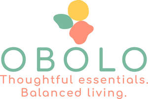

Trade Mark Journal No.2025/046 14 November 2025
UK00004281030 20 October 2025 (8,16,21)

- Class 8
- Spoons; Table knives, forks and spoons for babies; Baby spoons, table forks and table knives; Spoons being tableware; Soup spoons; Disposable spoons; Cutlery for use by babies; Biodegradable spoons; Silverware [cutlery, forks and spoons]; Tableware [knives, forks and spoons]; Table knives, forks and spoons of plastic; Knives, forks and spoons.
- Class 16
- Gift bags; paper gift bags; paper gift tags; paper bags for packaging; carrier bags; Paper gift bags; Paper wine gift bags; Gift paper; Paper gift boxes; Gift bags; Paper bags; Bags of paper; Gift wrapping paper; Gift wrap paper; Paper gift wrap; Paper shopping bags; Paper bags for packaging; Packaging bags of paper; Paper gift tags; Shopping bags of paper or plastic; Paper lunch bags; Paper gift wrapping ribbons; Paper gift wrap bows; Paper bows for gift wrap; Sandwich bags [paper]; Paper party bags; Metallic gift wrapping paper; Paper bags and sacks; Paper for bags and sacks; Bags made of paper; Carrier bags of paper or plastic; Padded bags of paper; Bags made of paper for packaging; Refuse bags of paper; Bags of paper for foodstuffs; Bags [envelopes, pouches] of paper or plastics, for packaging; Paper for use in the manufacture of tea bags; Paper for making bags and sacks; Cardboard gift boxes; Bags for packaging made of biodegradable paper; Conical paper bags; Bags (Conical paper -); Gift-wrapping paper; Plastic bags for wrapping; Paper boxes; Boxes of paper; Paper mail pouches; Paper bags for household use; Garbage bags of paper [for household use]; Bags and articles for packaging, wrapping and storage of paper, cardboard or plastics; Gift boxes; Bottle envelopes of cardboard or paper; Bottle envelopes of paper or cardboard; Food bags of paper or plastics; Gift cartons; Garbage bags of paper or of plastics; Bags (Garbage -) of paper or of plastics; Bags of paper for roasting purposes; Giftwrapping paper; Packaging boxes of paper; Paper pouches for packaging; Wrapping paper; Rubbish bags (made of paper or plastic materials); Gift wrap cards; Paper for wrapping books; Boxes of cardboard or paper; Boxes of paper or cardboard; Plastic bags for wrapping and packaging; Hat boxes of paper; Paper boxes for storing greeting cards; Gift boxes made of cardboard; Plastic gift wrap; Paper envelopes for packaging; Bottle wrappers of cardboard or paper; Bottle wrappers of paper or cardboard; Paper stationery; Packing paper; Paper napkins; Napkins of paper; Collapsible boxes of paper; Paper luggage labels; Plastic shopping bags; Plastic bags for packing; Luggage tags of paper; Gunpowder wrapping paper; Paper containers; Paper hangtags; Gift cards; Boxes made of paper; Decorative wrapping paper; Padded bags of card; Envelope paper; Plastic bags for packaging; Paper handkerchiefs; Handkerchiefs of paper; Paper; Clips for paper [stationery]; Brown paper for wrapping; Paper and cardboard; Gift wrapping foil; Paper sheets [stationery]; Paper washcloths; Paper towels; Towels of paper; Food waste bags of paper for household use; Decorative paper bows for wrapping; Gift packaging; Paper handtowels.
- Class 21
- Empty spray bottles; bottle brushes; bottle pourers; water bottles; glass bottles; aluminum water bottles; soap dispensing bottles; ; Toilet brushes; Toilet brush holders; Toilet brush sets; Lavatory brushes; Lavatory brush stands; Toilet and bathroom cleaning utensils ; Sponges for toilet use; Bathtub brushes; Shaving brush holders; Toilet plungers; Water closet brush holders; Toilet potties; Tub brushes; Bath brushes; Shaving brush stands; Scrubbing brushes; Toilet paper racks; Brush holders; Pot cleaning brushes; Toothbrush bristles; Cosmetic and toilet utensils; Bottle cleaning brushes; Washing brushes; Toilet roll holders; Washing-up brushes; Shampoo brushes; Tongue cleaning brushes; Holders for toilet paper; Toilet paper holders; Holders (Toilet paper -); Shaving brushes; Mopping brushes; Brushes for cleaning; Cleaning brushes; Dispensers for the storage of toilet paper [other than fixed]; Toilet tissue holders; Dishwashing brushes; Brushes (Dishwashing -); Floor brushes; Holders for shaving brushes; Brushes; Interdental brushes for cleaning the teeth; Brush goods; Cleaning brushes for teapot spouts; Bottle brushes; Toilet roll stands; Pastry brushes; Brushes for washing up; Lint brushes; Tooth brushes, non-electric; Shaving brushes of badger hair; Lawn brushes; Brushes (except paint brushes); Mascara brushes; Toilet cases; Eyeliner brushes; Abrasive sponges for kitchen [cleaning] use; Lip brushes; Dish brushes; Soap dispensing dish brushes; Crumb brushes; Brushes for household use; Cleaning brushes for feeding bottles; Interdental brushes; Cake brushes; Tooth brush cases; Fitted dispensers for wiping, drying, polishing and cleaning paper; Window groove cleaning brushes; Tongue brushes; Moulds (Ice cube -); Ice cube moulds; Ice cube molds; Molds (Ice cube -); Ice cube molds [moulds]; Plastic ice cube moulds; Ice cube moulds for refrigerators; Ice cube molds for refrigerators; Ice cube trays; Reusable ice cubes; Containers for ice; Cake molds [moulds]; Plastic ice pop forms; Ice cream scoops; Ice scoops; Ice pails; Ice buckets; Cake moulds; Ice pop molds for household purposes; Pudding moulds; Ice tongs; Ice scoops [barware]; Vessels for making ices and ice cream, non electric; Chocolate molds; Pudding molds; Non-electric ice cream makers; Ice cream makers, non-electric; Cake molds; Cake moulds of common metal; Ice cream makers, other than self-refrigerating; Pastry molds; Coolers [ice pails]; Empty spray bottles; Squeeze bottle [empty]; Squeeze bottles, empty; Plastic water bottles [empty]; Aluminum water bottles, empty; Bottle buckets; Water bottles sold empty; Shaker bottles sold empty; Reusable plastic water bottles sold empty; Empty water bottles for bicycles; Smart medicine bottles, empty; Feeding bottle brushes; Lotion containers, empty, for household use; Reusable stainless steel water bottles sold empty; Plastic water bottles; Water bottles; Glass bottles; Sports bottles sold empty; Cleaning brushes for feeding bottle teats; Aluminum water bottles; Glass jars; Glass storage jars; Glass cups; Glass bowls; Glass mugs; Glass ornaments; Kitchen jars; Cookie jars; Jam jars; Spice jars; Stainless steel soap; Reusable stainless steel water bottles; Ceramic tableware; Stainless steel cutting boards; Aluminium cookware; Aluminium bakeware; Tableware of porcelain; Aluminium moulds [kitchen utensils]; Tableware, cookware and containers; Cookware and tableware, except forks, knives and spoons; Tableware; Dinnerware of porcelain; Oven-to-table tableware; Crockery made of porcelain; Coffee cups; Tea cups; Cups; Coffee mugs; Cups and mugs; Drinking cups; Coffee pots; Coffee stirrers; Non-electric coffee drippers for brewing coffee; Liqueur cups; Coffee scoops; Sippy cups; Fruit cups; Cups (Fruit -); Compostable cups; Coffee grinders; Paper cups; Plastic cups; Cardboard cups; Cup lids; Egg cups; Cups (Egg -); Coffee pots [non-electric]; Non-electric coffee pots; Biodegradable cups; Vacuum coffee bean containers; Paper baking cups; Baking cups of paper; Mixing cups; Cupcake baking cups; Coffee filters not of paper being part of non-electric coffee makers; Coffee filters, not of paper, being part of non-electric coffee makers; Coffee percolators, non-electric; Non-electric coffee percolators; Percolators (Coffee -), non-electric; Feeding cups; Tea pots; Sake cups; Cups of paper or plastic.
Amarando Limited